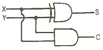
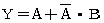
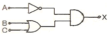
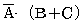
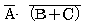
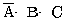
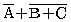
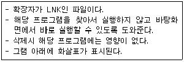

정보처리기능사 (2010-07-11 기출문제)
1과목: 전자 계산기 일반
1. 중앙처리장치의 한 종류인 CISC(Complex Instruction Set Computer)에 대한 설명으로 틀린 것은?
- 복잡하고 기능이 많은 명령어로 구성된다.
- 다양한 크기의 명령어를 사용한다.
- 많은 수의 레지스터를 사용한다.
- 마이크로 코드 설계가 어렵다.
(정답률: 53%)

2. 에러를 검출하고 검출된 에러를 교정하기 위하여 사용되는 코드는?
- BCD 코드
- Hamming 코드
- 8421 코드
- ASCII 코드
(정답률: 85%)
3. n 비트의 2진 코드 입력에 의해 최대 2n개의 출력이 나오는 회로로 2진 코드를 다른 부호로 바꾸고자할 때 사용하는 회로는?
- 디코더(decoder)
- 카운터(counter)
- 레지스터(register)
- RS플립플롭(RS flip-flop)
(정답률: 76%)
4. 제어장치의 기능에 대한 설명으로 틀린 것은?
- 산술 및 논리연산을 실행하는 장치이다.
- 입출력장치를 제어한다.
- 주기억장치에 기억된 명령을 꺼내어 해독한다.
- 프로그램카운터와 명령레지스터를 이용하여 명령어 처리순서를 제어한다.
(정답률: 73%)
5. 다음과 같은 논리회로는?

- 전가산기
- 반가산기
- 카운터
- 패리티 발생기
(정답률: 82%)
6. 입출력 조작의 시간과 중앙처리장치의 처리시간과의 불균형을 보완하는 것은?
- 채널장치
- 제어장치
- 터미널장치
- 콘솔장치
(정답률: 77%)
7. 명령어(Instruction)가 제공하는 정보가 아닌 것은?
- 작업소요시간
- 명령어 형식
- 연산자
- 데이터의 주소
(정답률: 64%)
8. (1011)2 - (1101)2의 값을 10진수로 나타내면?
- -1
- -2
- -3
- -4
(정답률: 74%)
9. 소프트웨어에 의하여 우선순위를 판별하는 방법은?
- 인터럽트 벡터
- 데이지 체인
- 폴링
- 핸드 쉐이킹
(정답률: 61%)
10. 기억장치로부터 전송된 메모리 워드나 기억될 메모리를 일시적으로 저장하는 레지스터는?
- PSW
- Queue
- MBR
- DMA
(정답률: 60%)
11. 다음 중 컴퓨터 시스템에서 처리할 경우 연산속도가 가장 빠른 것은?
- S = A / B
- S = A + B
- S = A - B
- S = A * B
(정답률: 68%)
12. 1 비트(bit) 기억장치로 가장 적절한 것은?
- 레지스터
- 누산기
- 계전기
- 플립플롭
(정답률: 72%)
13.

를 간소화하면?- A
- B
- A + B
- A · B
(정답률: 42%)
14. 토글 또는 보수 플립플롭으로서, JK 플립플롭의 J와 K를 묶어서 입력이 구성되며, 입력이 0일 경우에는 상태가 불변이고, 입력이 1일 경우에는 보수가 출력되는 것은?
- D플립플롭
- RS플립플롭
- P플립플롭
- T플립플롭
(정답률: 63%)
15. 제어장치가 앞의 명령 실행을 완료한 후, 다음에 실행 할 명령을 기억장치로부터 가져오는 동작을 완료할 때까지의 주기를 무엇이라고 하는가?
- fetch cycle
- transfer cycle
- search time
- run time
(정답률: 65%)
16. 기억장치 고유의 번지로서 0, 1, 2, 3과 같이 16진수로 약속하여 순서대로 정해놓은 번지, 즉, 기억장치 중의 기억장소를 직접 숫자로 지정하는 주소로서 기계어 정보가 기억되어 있는 것은?
- 메모리 주소
- 베이스 주소
- 상대 주소
- 절대 주소
(정답률: 77%)
17. 이항(Binary) 연산에 해당하는 것은?
- Rotate
- Shift
- Complement
- OR
(정답률: 63%)
18. 레지스터 중 PC(Program Counter)를 바르게 설명한 것은?
- 현재 실행 중인 명령어의 내용을 기억한다.
- 다음에 수행할 명령어의 번지를 기억한다.
- 기억 장소의 내용을 기억한다.
- 연산의 결과를 일시적으로 보관한다.
(정답률: 75%)
19. 그림과 같은 논리회로에서 출력 X에 알맞은 것은?





(정답률: 80%)
20. 오퍼랜드(Operand) 자체가 연산 대상이 되는 주소지정방식은?
- 즉시주소지정(Immediate Addressing)
- 직접주소지정(Direct Addressing)
- 간접주소지정(Indirect Addressing)
- 묵시적주소지정(implied Addressing)
(정답률: 51%)
2과목: 패키지 활용
21. 3단계 데이터베이스 구조에서 각 단계의 스키마에 해당하지 않는 것은?
- 내부 스키마
- 외부 스키마
- 개념 스키마
- 물리 스키마
(정답률: 83%)
22. 데이터베이스 관리자(DBA)의 역할과 거리가 먼 것은?
- 스키마 정의
- 무결성 제약조건의 인정
- 데이터 액세스 권한의 인정
- 프로그램의 논리 및 알고리즘의 설계
(정답률: 64%)
23. 학생 테이블에 데이터를 입력한 후, 주소 필드가 누락되어 이를 추가하려고 할 경우 적합한 SQL 명령은?
- MORE TABLE ~
- ALTER TABLE ~
- ADD TABLE ~
- MODIFY TABLE ~
(정답률: 67%)
24. SQL에서 DROP 문의 옵션(Optation) 중 “RESTRICT”의 역할에 대한 설명으로 가장 적합한 것은?
- 제거할 요소들을 기록 후 제거한다.
- 제거할 요소가 참조 중일 경우에만 제거한다.
- 제거할 요소들에 대한 예비조치(back up) 작업을 한다.
- 제거할 요소가 참조 중이면 제거하지 않는다.
(정답률: 64%)
25. 스프레드시트에서 사용자가 설정하는 특정 조건을 만족하는 자료만 검색, 추출하는 기능은?
- 정렬(Sort)
- 필터(Filter)
- 매크로(Macro)
- 차트(Chart)
(정답률: 83%)
26. 스프레드시트에서 행과 열이 만나서 이루는 사각형으로 데이터가 입력되는 기본 단위는?
- 피치(pitch)
- 셀(cell)
- 도트(dot)
- 포인트(point)
(정답률: 85%)
27. DBMS의 필수 기능으로 옳은 것은?
- 조작 기능, 제어 기능, 연산 기능
- 정의 기능, 제어 기능, 연산 기능
- 정의 기능, 조작 기능, 연산 기능
- 정의 기능, 조작 기능, 제어 기능
(정답률: 77%)
28. 프레젠테이션에서 화면을 구성하는 그림이나 도형들은?
- 슬라이드
- 개체
- 시나리오
- 개요
(정답률: 69%)
29. SQL 구문 형식으로 옳지 않은 것은?
- SELECT ~ FROM ~ WHERE
- DELETE ~ FROM ~ WHERE
- INSERT ~ INTO ~ WHERE
- UPDATE~ SET ~ WHERE
(정답률: 71%)
30. SQL의 데이터 정의어에 해당되지 않는 것은?
- SELECT
- CREATE
- ALTER
- DROP
(정답률: 55%)
3과목: PC 운영 체제
31. UNIX의 특징으로 옳지 않은 것은?
- 대화식 운영체제이다.
- 하나의 컴퓨터를 여러 사람이 사용할 수 있다.
- 이식성과 확장성이 뛰어난 폐쇄형 시스템이다.
- 파일시스템이 Tree형태의 계층적 구조로 되어 있다.
(정답률: 65%)
32. “윈도98”에서 바탕화면에 있는 비실행파일을 마우스 끌기를 이용하여 “내 문서” 폴더로 가져갔을 때 설명으로 옳은 것은?
- 바탕화면의 파일이 삭제되어 휴지통으로 이동한다.
- “내 문서” 폴더에서 복사 오류가 발생한다.
- 바탕화면의 끌기 대상 파일이 “내 문서” 폴더로 이동한다.
- 바탕화면의 끌기 대상 파일이 복사되어 “내 문서” 폴더 내에도 동일한 문서가 만들어진다.
(정답률: 70%)
33. Which one is not related to Processing Program?
- Language Translate Program
- Service Program
- Job Management Program
- Problem Program
(정답률: 68%)
34. 운영체제(OS)에 대한 설명으로 틀린 것은?
- OS는 컴퓨터와 사용자 간의 중간자 역할을 한다.
- OS는 H/W 및 주변장치를 관리하는 역할을 한다.
- 하나의 컴퓨터 내의 모든 소프트웨어는 각각 자신의 OS를 따로 가지고 있어야 한다.
- 일반적으로 OS는 사용자가 컴퓨터를 제어하기 쉽게 할 수 있는 인터페이스를 제공한다.
(정답률: 68%)
35. UNIX의 가장 핵심 요소로서, 메모리, CPU, 프린터 등의 시스템 자원 활용도를 높이기 위해 스케줄링과 자료 관리를 하는 것은?
- 채널
- 유틸리티
- 커널
- 쉘
(정답률: 57%)
36. 도스(MS-DOS)에서 단편화되어 있는 파일의 저장 상태를 최적화하여 디스크의 작동 효율을 높이는 명령은?
- DISKCOMP
- CHKDSK
- DEFRAG
- DISKCOPY
(정답률: 37%)
37. UNIX 명령어 “rm" 의 설명으로 옳은 것은?
- 파일 삭제
- 디렉토리 생성
- 디렉토리 이동
- 파일 이동
(정답률: 73%)
38. 가상기억장치 관리 기법인 페이지 대체 알고리즘에 대한 설명으로 틀린 것은?
- FIFO : 가장 처음에 기록된 페이지를 교체
- LRU : 최근 쓰이지 않은 페이지를 교체
- LFU : 사용 횟수가 가장 적은 페이지를 교체
- MRU : 사용 빈도가 가장 많은 페이지를 교체
(정답률: 45%)
39. 교착상태(Dead Lock)에 관한 설명으로 옳지 않은 것은?
- 교착상태는 둘 이상의 프로세스들이 서로 다른 프로세스가 차지하고 있는 자원을 요구하여 무한정 기다리게 함으로 인해 결국 해당 프로세스의 진행이 중단되는 현상이다.
- 교착상태는 어떤 자원을 한 프로세스가 사용 중일 때 다른 프로세스가 그 작업이 끝날 때까지 기다리는데서 발생한다.
- 교착상태는 한 프로세스에게 할당된 자원을 스스로 내놓기 전에는 다른 자원을 강제로 빼앗을 수 없을 때 발생한다.
- 교착상태는 프로세스들이 자신의 자원을 내놓고 상대방의 자원을 요구하는 것이 순환을 이룰 때 발생한다.
(정답률: 57%)
40. 컴퓨터를 재부팅할 때의 방법으로 틀린 것은?
- RESET 키를 누른다.
- 시작메뉴를 이용하여 재부팅한다.
- ESC 키를 누른다.
- Alt + F4 키를 이용하여 재부팅한다.
(정답률: 71%)
41. What is the name of the program that can fix minor errors on your hard drive?
- SCANDISK
- FDISK
- FORMAT
- MEM
(정답률: 47%)
42. 프로세스의 상태 변화 중 우선순위가 가장 높은 프로세스가 준비상태에서 실행상태로 전환되는 것은?
- 웨이크 업
- 타이머 종료
- 디스패치
- 블록
(정답률: 58%)
43. "윈도98"의 휴지통에 대한 설명으로 틀린 것은?
- 삭제한 파일을 임시 저장하며, 휴지통 내에 파일을 다시 복구할 수 있다.
- 휴지통의 크기를 변경시킬 수 없다.
- 파일 삭제 시 휴지통에 보관하지 않고 즉시 삭제할지의 여부를 지정할 수 있다.
- 파일 삭제시 삭제확인 메시지를 보이지 않게 지정할 수 있다.
(정답률: 70%)
44. UNIX에서 인터넷을 통해 post@misty.acme.com에게 E-메일을 보내는 명령으로 옳은 것은?
- mail post@misty.acme.com
- talk post@misty.acme.com
- mail ~/post@misty.acme.com
- talk ~/post@misty.acme.com
(정답률: 53%)
45. 도스(MS-DOS)에서 EXE 형태의 파일을 COM 파일로 변환시켜 주는 명령어는?
- EXE2BIN
- EMM386
- RAMDRIVE
- HIMEM
(정답률: 54%)
46. "윈도98"에서 다음 설명에 해당하는 것은?

- 아이콘
- 단축아이콘
- 폴더
- 작업표시줄
(정답률: 71%)
47. "윈도98"의 [내 컴퓨터]-[파일]-[포맷]에서 3.5플로피 디스크를 포맷할 때, 제공되는 포맷 형식이 아닌 것은?
- 빠른 포맷
- 백업 포맷
- 전체
- 시스템 파일만 복사
(정답률: 43%)
48. 도스(MS-DOS)에서 명령어 중 COMMAND.COM 파일이 관리하는 것은?
- CHKDSK
- DELTREE
- COPY
- FORMAT
(정답률: 47%)
49. "윈도98"에서 하드웨어 장치를 장착하면 자동 인식하는 것은?
- 멀티태스킹(multi-tasking)
- 오토 컨넥트(auto-connect)
- 드래그 앤 드롭(drag & drop)
- 플러그 앤 플레이(plug & play)
(정답률: 75%)
50. "윈도98" 부팅 시 F8 키를 입력하면 나타나는 멀티 부팅 메뉴가 아닌 것은?
- Previous Version Of MS-DOS
- Logged
- Safe Mode Confirmation
- Normal
(정답률: 38%)
4과목: 정보 통신 일반
51. 중앙 내부의 구리 심선과 원통형의 외부도체로 구성되어 있고 그 사이에는 절연물로 채워져 있으며 주로 CATV용 구내전송선로에 이용되는 케이블은?
- 국내케이블
- 동축케이블
- 폼스킨케이블
- 광케이블
(정답률: 61%)
52. 송·수신 간에 통신회선이 고정적이고, 언제나 통신이 가능하며 많은 양의 데이터 전송에 효율적인 회선은?
- 중계회선
- 구내회선
- 전용회선
- 교환회선
(정답률: 54%)
53. 송신측에서 정보의 정확한 전송을 위해서 전송할 데이터의 앞부분과 뒷부분에 헤더(header)와 트레일러(trailer)를 첨가하는 과정은?
- 정보의 캡슐화
- 연결 제어
- 정보의 분할
- 정보의 분석
(정답률: 61%)
54. 전력이 10[W]인 경우 [dBm]의 값은?
- 10[dBm]
- 20[dBm]
- 30[dBm]
- 40[dBm]
(정답률: 40%)
55. 이동전화 시스템에서 CDMA 방식의 의미는?
- 채널분할 다중화방식
- 코드분할 다원접속방식
- 캐리어 변복조방식
- 공간분할 다중접속방식
(정답률: 58%)
56. 다음 중 디지털신호의 장거리 전송을 위해 전송신호를 새로 재생시키거나 전압을 높여 주는 물리적 계층의 기능만을 수행하는 것은?
- 게이트웨이
- 라우터
- 리피터
- 브리지
(정답률: 43%)
57. 다음 중 데이터통신의 교환방식이 아닌 것은?
- 메시지교환방식
- 패킷교환방식
- 기계교환방식
- 회선교환방식
(정답률: 59%)
58. 정지-대기(stop and wait)에 관한 설명중 옳은 것은?
- 오류 발생 때만 NAK로 검출한다.
- 송신완료 후 오류 블록만 재송신 요구한다.
- 비동기에서 오류를 수정한다.
- 매 블록마다 ACK와 NAK로 응답한다.
(정답률: 43%)
59. 다음 중 광섬유 케이블의 손실에 해당하지 않는 것은?
- 접속손실
- 산란손실
- 흡수손실
- 유전체손실
(정답률: 51%)
60. 데이터 전달의 기본 단계를 순서대로 옳게 나열한 것은?
- 회선연결→링크확립→메시지전달→링크단절→회선단절
- 링크확립→회선연결→메시지전달→회선단절→링크단절
- 회선연결→링크단절→메시지전달→링크확립→회선단절
- 링크확립→회선단절→메시지전달→회선연결→링크단절
(정답률: 57%)